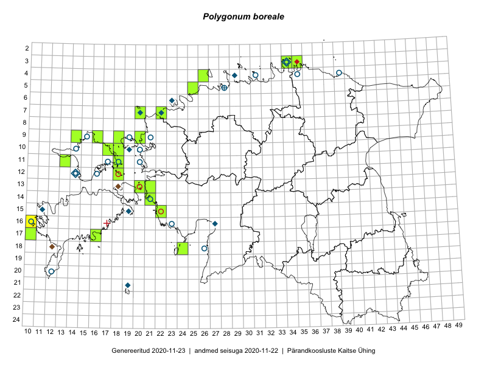

Polygonum boreale
Uuendatud: 2016-12-02
Kaardile koondatud taksonid: Polygonum boreale (Lange) Small

Kaart põhineb 4 kirjel, neist vaatlusi 1 ja eksemplare 3. Taksonit on leitud 4 ruudust.
Viited andmebaasikirjetele